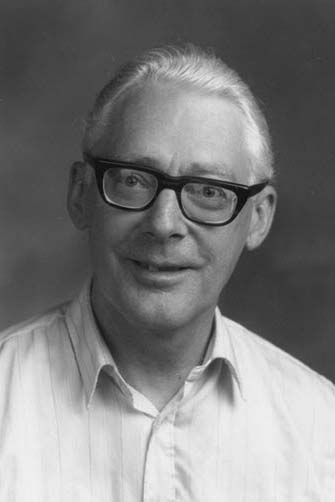
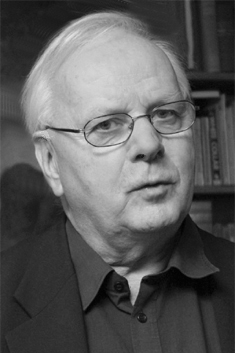

|   |
2001 год Ole-Johan Dahl (1931-2002) и Kristen Nygaard (1926-2002) «За идеи, фундаментальные для развития объектно-ориентированного программирования, возникшие в ходе разработки языков программирования Simula I и Simula 67» |
Страна: Норвегия
Образование: O.-J. Dahl - Магистр науки в области математики, Университет Осло, 1960
K. Nygaard - Магистр науки в области математики, Университет Осло, 1956
О лауреатах
Kristen Nygaard изначально занимался исследованием операций, но ещё в начале своей научной деятельности он осознал, что компьютерная симуляция может стать полезным средством в его работе. Сотрудничество с Ole-Johan Dahl привело к созданию первого языка моделирования SIMULA I, базирующегося на языке ALGOL-60. SIMULA I изначально считался системным описанием и языком моделирования, а не общим языком программирования. Dahl и Nygaard быстро поняли, что их концепции моделирования могут применяться для программирования в целом. В связи с этим, они спроектировали Simula 67, позже названный просто SIMULA, - язык программирования общего назначения. SIMULA содержал концепции, которые теперь есть в основных объектно-ориентированных языках: классы и объекты, виртуальные методы, процессы и планировщики, автоматическое управление памятью (включая сбор мусора). Одним из неожиданных результатов было то, что люди часто находили создание модели в SIMULA более полезным, чем фактические результаты моделирования – процесс описания приложения предоставлял ценную информацию сам по себе.
Ключевые слова: Simula, Object-oriented programming
Краткая библиография
| 1. |
Dahl, O.-J., E. W. Dijkstra, and C. Hoare, Structured Programming, Volume 8 of A.P.I.C. Studies in Data Processing. Academic Press, 1972. Значимая книга на тему структурного программирования, до сих пор пользующаяся популярностью. |
| 2. |
Dahl, O.-J., “The roots of object-oriented programming: the Simula language,” in M. Broy and E. Denert (editors) Software Pioneers: Contributions to Software Engineering, pp. 79–90, Springer-Verlag, Berlin, Heidelberg, 2002. Статья о происхождении понятия объекта. |
| 3. |
Dahl, O.-J. and K. Nygaard. “Class and subclass declarations,” in J. N. Buxton (editor) Simulation Programming Languages, Proceedings from the IFIP working conference in Oslo, pp. 158–174, Amsterdam, May 1967, North Holland. Материалы конференции 1967 года по языкам моделирования где впервые были описаны классы и подклассы SIMULA 67. |
| 4. |
Dahl, O.-J. and K. Nygaard, "SIMULA - An Algol Based Simulation Language," Communications of the ACM, Vol. 9, Num. 9, 1966, pp. 671-678. Статья, описывающая Simula I – предшественника языка Simula 67. |
| 5. |
Dahl, O.-J. and K. Nygaard, SIMULA- A language for Programming and Description of Discrete Event Systems, Oslo 3, Norway, Norwegian Computing Center, Forskningveien 1B, 5th edition, September 1967, 124 pages. Описание SIMULA и того, как его использовать в задачах моделирования событий. |